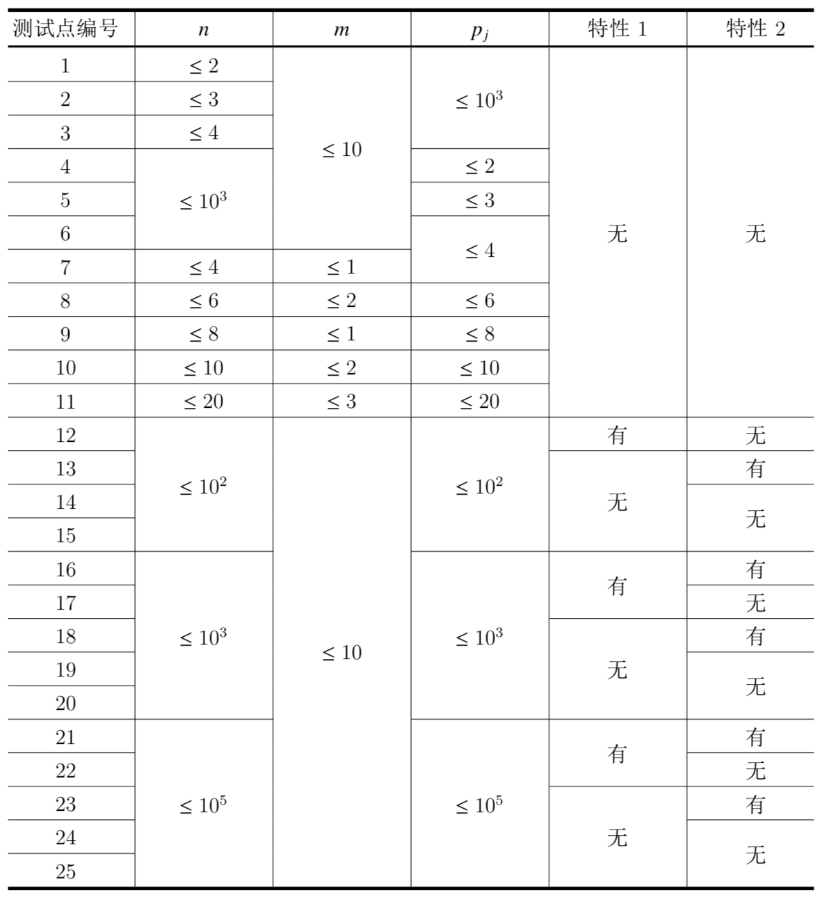

【样例1解释】
共有两种蔬菜：
销售第1种蔬菜时，每销售一单位可以获得的收益为3，第一次销售这种蔬菜时，额外可以获得的收益为3。这种蔬菜共有3个单位，均会在第一天结束时变质。
销售第2种蔬菜时，每销售一单位可以获得的收益为2，第一次销售这种蔬菜时，额外可以获得的收益为5。这种蔬菜共有8个单位，其中，有3单位在第一天结束时变质，3单位在第二天结束时变质，2单位在第三天结束时变质。
在只销售1天时，应当销售2单位的第一种蔬菜和1单位的第二种蔬菜。
在这种情况下：销售第一种蔬菜的收益为$2×3 + 3$；销售第二种蔬菜的收益为$1×2+5$；总共获得的收益为$(2×3+3)+(1×2+5) = 16$。
在只销售3天时，第一天应当销售3单位的第一种蔬菜，第二天应当销售3单位的第二种蔬菜（此时选择在第二天结束时会变质的3个单位出售），第三天销售2单位的第二种蔬菜。
在这种情况下：销售第一种蔬菜的收益为$3×3 + 3$；销售第二种蔬菜的收益为$(3+2)×2+5$；总共获得的收益为$(3×3+3)+[(3+2)×2+5] = 27$。
【子任务】

特性1：所有的$s_i$均为0。
特性2：所有的$x_i$均为0。
对于所有的测试数据，均保证$k$组询问中的$p_j$互不相同。
对于所有的测试数据，均保证$0<a_i,c_i≤10^9,0≤s_i,x_i≤10^9$。
 Comet OJ
Comet OJ